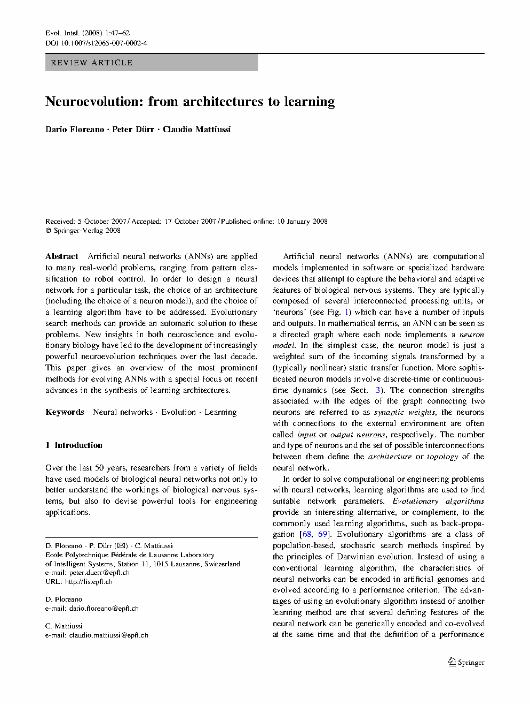
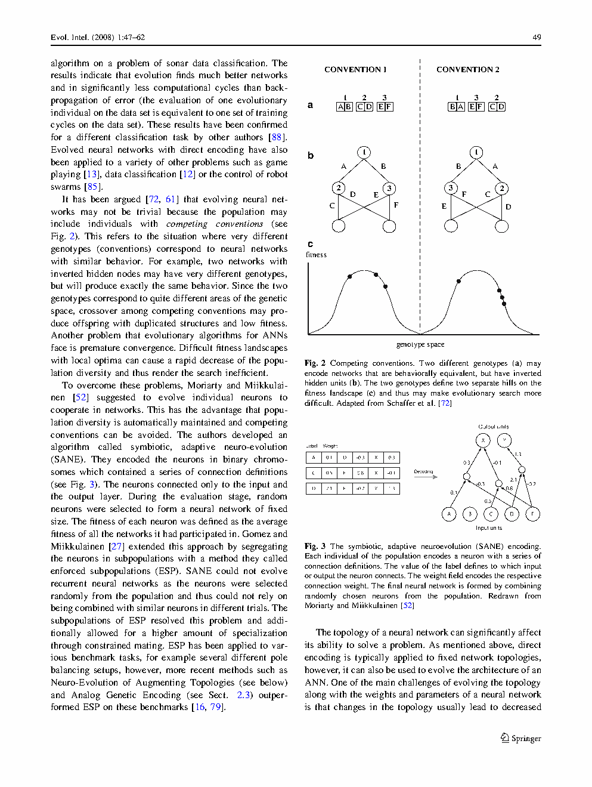

| Title | Neuroevolution: From Architectures to Learning（神经进化：从架构到学习——演化人工神经网络的系统综述） |
| Authors | Dario Floreano（EPFL），Peter Dürr（EPFL），Claudio Mattiussi（EPFL）——三位均来自 EPFL 智能系统实验室（LIS），Floreano 为实验室主任 |
| Affiliation | EPFL（瑞士洛桑联邦理工学院），智能系统实验室（Laboratory of Intelligent Systems, LIS）——全球进化机器人和神经进化研究的中心之一 |
| Venue | Evolutionary Intelligence（Springer），2008 年，Vol. 1，pp. 47–62。共 16 页，综述论文。Evolutionary Intelligence 是进化计算与智能系统交叉领域的旗舰期刊之一 |
| DOI / Links | 10.1007/s12065-007-0002-4 | Received: 2007-07 | Accepted: 2007-12 | Published: 2008-01 | 引用量：500+ |
| TL;DR | 本文按进化自由度的递增层次组织神经进化方法的系统综述：（1）仅进化突触权重（固定拓扑——最基础层，进化作为无梯度优化器的直接应用）；（2）进化网络拓扑（TWEANNs——拓扑与权重共同进化，以 NEAT 为代表的结构变异方法）；（3）进化神经元模型和动力学（进化激活函数、时间常数、脉冲神经元参数——让进化选择"用什么做基本计算单元"）；（4）进化发育编码/间接编码（用紧凑基因型通过发育规则生成大型网络——解决可扩展性瓶颈）；（5）进化学习规则（进化局部可塑性参数，如 Hebbian 规则系数——让进化决定"如何学习"而非"学到什么"，体现 Baldwin 效应）。核心主张：神经进化的独特价值不是替代 BP 做权重优化，而是在 BP 无法运作的场景（不可微奖励、闭环行为评估、架构可变）中自动发现会学习的架构。 |
| Inspiration Source | → What Insight It Inspired | Type |
|---|---|---|
| 生物进化中基因型-表型的多层次映射 —— 基因不仅编码蛋白质（"权重的值"），还编码调控网络（"权重的组织方式"）和发育规则（"如何生长"） | → 神经进化的多层次金字塔：不同层次（权重 → 拓扑 → 神经元模型 → 发育规则 → 学习规则）对应不同的抽象程度和可扩展性。层次越高 → 搜索空间越紧凑（基因型长度越短）→ 但基因型-表型映射越复杂（搜索更难）。工程师需要根据任务的规模选择正确的层次 | 架构层次论 |
| 生物神经系统的发育过程 —— 从少量引导分子（形态发生素）的浓度梯度中，通过局部细胞响应（分化、迁移、轴突导向）自组织生成高度结构化的神经网络 | → 间接/发育编码：一个几十个参数的基因型（如 CPPN 或 GRN 参数）可以通过模拟发育过程生成包含数千到数万突触连接的大型神经网络。这解决了直接编码"基因型长度 = 表型大小"的可扩展性瓶颈，并自动引入模块化、对称性和重复模式等生物神经网络的特征 | 表示 |
| 神经可塑性在时间尺度上的层级 —— 毫秒（突触传递）、秒-分钟（短期可塑性 STP）、小时-天（长期可塑性 LTP/LTD）、世代（进化塑造学习规则） | → 进化学习规则：进化作用于"如何学习"的元参数（如 Hebbian 规则的 4 个系数 A,B,C,D），而非具体的突触权重值。这在计算上实现了 Baldwin 效应——进化在演化时间尺度上发现良好的"学习偏置"，个体学习在一生中适应局部变化。对于机器人：仿真中进化学习规则（便宜），真实部署后个体学习规则在线微调（解决 Reality Gap 的最后差距） | 双层自适应 |
| 复杂化保护（Complexification Protection） —— 生物进化倾向于从简单结构开始，逐步增加复杂性，而非从随机复杂结构开始 | → NEAT 的"从最小网络开始"策略：初始种群只包含无隐藏层的最小网络（输入直连输出）。通过结构变异逐步添加神经元和连接。关键洞察：新添加的结构一开始对行为影响很小（权重接近零），从而保护已有的适应性行为不被破坏——类似于生物中"基因复制 + 新功能化"的进化模式 | 搜索策略 |
flowchart TB
subgraph L1["Level 1: 仅进化权重（固定拓扑）"]
direction LR
L1A["基因型: 固定长度实数向量
[w1, w2, ..., wn]"] --> L1B["表型: 固定架构ANN
权重 = 基因型"] --> L1C["适应度: 闭环行为评估
如导航距离、避障成功率"]
end
subgraph L2["Level 2: 进化拓扑（TWEANNs）"]
direction LR
L2A["基因型: 可变长度
编码权重+连接+节点"] --> L2B["表型: 可变架构ANN
NEAT历史标记保证交叉对齐"] --> L2C["复杂化保护: 新结构初始化为中性"]
end
subgraph L3["Level 3: 进化神经元模型"]
direction LR
L3A["基因型: 包含神经元类型标签
sigmoid / spiking / 振荡器"] --> L3B["表型: 异构ANN
不同神经元有不同动力学"] --> L3C["时间编码: 脉冲时序携带信息"]
end
subgraph L4["Level 4: 进化发育编码"]
direction LR
L4A["基因型: 紧凑发育规则 ~10-100参数
CPPN / GRN / L-system"] --> L4B["发育过程: 迭代生成
模拟胚胎发育"] --> L4C["表型: 大规模·模块化·重复ANN
自动产生正则性"]
end
subgraph L5["Level 5: 进化学习规则（元学习）"]
direction LR
L5A["基因型: 可塑性参数
Hebbian系数 (A,B,C,D) + η"] --> L5B["生命周期学习: 个体根据经验
用局部规则更新权重"] --> L5C["适应度: 学习后的行为
进化搜索最优学习偏置"]
end
L1 --> L2 --> L3 --> L4 --> L5
L5 -.->|"Baldwin效应: 学习平滑适应度地形"| L1
L4 -.->|"发育压缩: 小基因型→大网络"| L2
L3 -.->|"时间编码: 丰富网络表达能力"| L1
classDef l1 fill:#fef7ed,stroke:#f59e0b,stroke-width:2px,color:#92400e
classDef l2 fill:#e8f0fe,stroke:#3b82f6,stroke-width:2px,color:#1d4ed8
classDef l3 fill:#f0ebfd,stroke:#8b5cf6,stroke-width:2px,color:#6d28d9
classDef l4 fill:#ecfdf5,stroke:#10b981,stroke-width:2px,color:#047857
classDef l5 fill:#fff1f2,stroke:#f43f5e,stroke-width:2px,color:#be123c
class L1A,L1B,L1C l1
class L2A,L2B,L2C l2
class L3A,L3B,L3C l3
class L4A,L4B,L4C l4
class L5A,L5B,L5C l5
flowchart TB
subgraph INIT["初始化"]
I1["最小网络: 无隐藏层
输入节点直连输出节点"]
end
subgraph MUT["结构变异"]
M1["添加连接: 在两个已有节点间
添加新突触连接 · 权重~0"]
M2["添加节点: 将已有连接拆分
A→B 变为 A→新节点→B
新节点输入权重=1, 输出=原权重
保证功能不变（中性变异）"]
end
subgraph ALIGN["历史标记 Historical Marking"]
A1["每个新基因（连接/节点）获得唯一
全局创新编号 Innovation Number"]
A2["交叉时匹配同号基因
不相交/多余基因随机继承
→ 保证有意义的基因对齐"]
end
subgraph SPECIATE["物种分化 Speciation"]
S1["计算遗传距离: 不相交基因数+
多余基因数+权重差异加权和"]
S2["按距离分物种
物种内共享适应度
→ 保护拓扑创新免于过早淘汰"]
end
subgraph SELECT["选择与下一代"]
SEL1["物种内锦标赛选择
精英保留 · 物种规模按平均适应度调整"]
end
INIT --> MUT
MUT --> ALIGN
ALIGN --> SPECIATE
SPECIATE --> SELECT
SELECT -.->|"下一代"| MUT
classDef init fill:#fef7ed,stroke:#f59e0b,stroke-width:2px,color:#92400e
classDef mut fill:#e8f0fe,stroke:#3b82f6,stroke-width:2px,color:#1d4ed8
classDef align fill:#f0ebfd,stroke:#8b5cf6,stroke-width:2px,color:#6d28d9
classDef spec fill:#ecfdf5,stroke:#10b981,stroke-width:2px,color:#047857
classDef sel fill:#fff1f2,stroke:#f43f5e,stroke-width:2px,color:#be123c
class I1 init
class M1,M2 mut
class A1,A2 align
class S1,S2 spec
class SEL1 sel
flowchart TD
subgraph GEN["基因型: 可塑性参数"]
G1["θ = (A, B, C, D, η)
广义Hebbian规则系数"]
end
subgraph INIT_NET["初始化网络"]
N1["用基因型构建ANN
权重随机初始化
（某些方法初始权重也由基因型决定）"]
end
subgraph LIFETIME["个体生命周期: 在任务上运行并学习"]
L1["每个时间步:
1. 感知→网络前向传播→动作
2. 环境反馈（奖励/惩罚）
3. 用局部可塑性规则更新权重"]
L2["Δw_ij = η(A·x_i·x_j + B·x_i + C·x_j + D)
纯局部: 每次更新只用前后突触激活"]
L3["学习持续整个生命周期
（或固定时间窗口）"]
end
subgraph FITNESS["适应度计算"]
F1["适应度 = 生命周期最后阶段的行为表现
（不是学习前的表现）
→ 选择会学习好的个体"]
end
subgraph EVOLVE["进化循环"]
E1["选择 · 交叉 · 变异
下一代的可塑性参数
→ 进化搜索最优'学习偏置'"]
end
GEN --> INIT_NET
INIT_NET --> LIFETIME
LIFETIME --> FITNESS
FITNESS --> EVOLVE
EVOLVE -.->|"新一代 θ"| GEN
classDef gen fill:#fef7ed,stroke:#f59e0b,stroke-width:2px,color:#92400e
classDef net fill:#e8f0fe,stroke:#3b82f6,stroke-width:2px,color:#1d4ed8
classDef life fill:#f0ebfd,stroke:#8b5cf6,stroke-width:2px,color:#6d28d9
classDef fit fill:#ecfdf5,stroke:#10b981,stroke-width:2px,color:#047857
classDef evo fill:#fff1f2,stroke:#f43f5e,stroke-width:2px,color:#be123c
class G1 gen
class N1 net
class L1,L2,L3 life
class F1 fit
class E1 evo
| 类别 | 内容 | 维度 |
|---|---|---|
| 输入 | 任务定义（环境 + 奖励/适应度函数）+ 神经进化的层次选择（进化什么：权重？拓扑？学习规则？）+ 进化参数（种群大小、代数、变异率） | 任务可以是：监督学习（但有标签噪声——BP失效）、强化学习（不可微奖励）、机器人闭环控制（非平稳数据分布）、多任务学习（需要架构灵活性） |
| 输出 | 最优基因型 $\theta^*$ 及解码表型 $\pi_{\theta^*}$：一个可能具有学习能力的自适应神经网络系统——其架构、神经元类型和学习规则都经过进化优化 | 表型可以是：固定权重的静态网络 / 可变拓扑的动态网络 / 带有终身学习能力的自适应网络 / 通过发育生成的大型模块化网络 |
| 目标 | 展示神经进化作为元学习框架的独特价值——不是替代 BP，而是在 BP 失效的场景中提供以下能力：架构自动发现、不可微奖励下的学习、闭环行为优化、以及"学会学习"的元学习 | 评估指标：最终适应度 + 架构效率（解决问题所需的最简网络大小）+ 学习速度（进化学习规则在部署后的适应效率） |
这是一篇方法论综述——它不提出新算法，而是对已有算法进行概念层次的重新组织和深化理解。本文的核心贡献不是"我们发明了 X"，而是"神经进化方法可以按'进化自由度的递增层次'组织为五层金字塔——理解这五个层次的关系和权衡，是正确选择和应用神经进化方法的关键"。对于从业者，本文提供了选择指南：给定任务特征（是否有可微奖励？是否需要在线适应？网络规模多大？），应该选择哪个层次的神经进化方法。对于研究者，本文指出了开放问题：如何让神经进化方法在更高层次（发育编码、学习规则）上更高效、更可靠地工作。对于整个领域，本文将分散的神经进化方法组织为连贯的知识体系——使得后续研究者可以在正确的概念层次上定位自己的贡献。
⚠ 表头用英文，正文用中文
| Prior Method | Core Idea | Why It Fails |
|---|---|---|
| 反向传播 + 手工架构设计（BP + Hand-designed Architecture） | 人类专家设计网络结构（层数、宽度、连接模式），用 BP 训练权重 | 架构是瓶颈：如果手工设计的架构不适合任务（如层数太少——欠拟合；层数太多——过拟合；连接模式未充分利用任务结构），BP 可以在该架构内找到最优权重，但不能超越架构的能力上限。且 BP 要求可微奖励——在机器人闭环控制中通常不可得。 |
| 强化学习（RL: Policy Gradient, Q-learning, Actor-Critic） | 通过与环境交互收集的经验，用 TD 误差或策略梯度更新网络权重 | 固定架构 + 信用分配稀疏：RL 同样依赖手工设计的架构。更严重的是，RL 的信用分配（TD 误差、优势函数）在高维连续控制任务中方差极大，通常需要数百万次交互才能收敛——且每次交互产生的经验高度相关（非 i.i.d.），违反了 SGD 的基本假设。 |
| 传统神经进化（仅进化权重，固定拓扑） | 用 EA 在固定架构中搜索权重，不需要梯度 | 维度灾难：对于现代深度网络（数百万到数十亿权重），直接编码基因型的长度 = 权重数量——种群式进化在如此高维的空间中效率极低。CMA-ES 可以处理中等维度（~数百到数千），但对于深度网络的可扩展性不足。 |
| NAS（Neural Architecture Search, RL-based） | 用 RL 控制器（RNN）生成架构描述，训练后评估性能，用策略梯度更新控制器 | 计算成本极高：典型的 RL-based NAS 需要训练和评估数千个候选架构（每个在目标数据集上从头训练），总 GPU 时间可达数千 GPU-days。虽然进化式 NAS（如 Regularized Evolution）降低了成本，但在"同时搜索架构和权重"的场景中（而非先搜架构再训权重），成本仍然很高。 |
神经进化不是单一算法，而是通过进化算法搜索神经网络各个方面的框架。以下公式组按五层金字塔组织——从基础的权重进化到高级的元学习——展示每层核心的数学机制。
LaTeX rendered by MathJax. 显示公式用 $$...$$，行内公式用 $...$。⚠ 符号解释请用中文。
| 层级 | 关键超参数 | 含义 | 典型取值范围 |
|---|---|---|---|
| L1: 权重进化 | CMA-ES 种群大小 $\lambda$ 初始步长 $\sigma_0$ | 每代生成的候选解数 / 初始搜索尺度 | $\lambda = 4 + 3\ln(n_w)$（CMA-ES 默认公式） $\sigma_0 = 0.1\sim0.5$ |
| L2: 拓扑进化 | 结构变异率 物种距离阈值 $\delta_{\text{threshold}}$ 兼容性系数 $c_1, c_2, c_3$ | 添加/删除节点/连接的概率 / 物种划分敏感度 / 三类基因差异的权重 | 添加连接：0.05~0.3 添加节点：0.01~0.1 $\delta_{\text{threshold}}$ 需根据任务调参 |
| L3: 神经元进化 | 神经元类型变异率 激活函数候选集 | 改变神经元类型的概率 / 可供选择的计算单元类型 | 类型集: {sigmoid, tanh, ReLU, linear, spiking-LIF, oscillator} 变异率: 0.01~0.1 |
| L4: 发育编码 | 基因型维度 $m$ 发育迭代次数 $T_{\text{dev}}$ | 压缩程度 / 发育过程的精细度 | $m = 10\sim100$（紧凑） $T_{\text{dev}} = 5\sim50$ |
| L5: 学习规则 | 可塑性参数范围 生命周期长度 $T$ 学习阶段占比 $T_{\text{learn}}/T$ | 学习规则系数搜索范围 / 个体生命总长 / 学习与评估的时间分配 | $\eta \in [10^{-5}, 10^{-1}]$ $A,B,C,D \in [-1, 1]$ $T_{\text{learn}}/T \approx 0.5$~$0.8$ |
神经进化的三个基础原理：（1）进化作为多模态无梯度优化器——为什么进化在崎岖适应度地形上比梯度方法更好？（2）复杂化保护——如何在增加搜索自由度的同时不破坏已有好解？（3）Baldwin 效应——学习如何引导进化，进化如何设计学习。
在神经进化中的应用：当任务具有稀疏奖励（机器人只有在成功抓取物体时才获得正奖励，中途零奖励）、不可微奖励（行为质量评分由人类给出）、或行为的质变阈值（学会走路 vs 不会走路）时，适应度地形极不平滑——大片的"零奖励平台"被狭窄的"有奖励峡谷"分割。在这种地形上，梯度方法几乎不可能（因为零奖励区域的梯度为零），而种群进化只要有一个个体偶然"撞"到了有奖励的区域，它的基因就会迅速传播。
📷 论文图表截图。图片保存至 figures/ 子目录。

📷 请将截图保存为figures/fig1.png本图展示了：神经进化方法的五层分类——从下到上依次增加进化的自由度和抽象层次。底部（Level 1）是仅进化权重——最直接的"用进化替代 BP"方案。顶部（Level 5）是进化学习规则——进化"设计会学习的系统"，是元学习的一种实现。每一层都包含前一层的所有能力，并增加了本层特有的新自由度。

📷 请将截图保存为figures/fig2.png本图展示了：NEAT 三个核心机制的交互——历史标记（Historical Marking）解决排列问题（不同拓扑的基因型如何有意义地对齐和交叉），复杂化保护（Complexification）确保新添加的结构不会破坏已有行为，物种分化（Speciation）保护拓扑创新在探索期间不被过早淘汰。
| 数据问题 | 潜在困难 | 严重程度 |
|---|---|---|
| 适应度评估的噪声 | 在随机环境中，同一个基因型的不同次评估给出显著不同的适应度（高方差）。进化算法会将"运气好"的个体误认为"基因好"——导致选择压力指向噪声而非真实能力。需要多次重复评估取平均（增加 $M$ 倍成本）来对抗噪声 | ★★★★★ |
| 适应度函数的"意外偏好" | 设计不良的适应度函数会奖励"聪明的作弊"——如机器人学会高速旋转使传感器短暂指向目标方向（而非实际导航到目标）。进化对于利用适应度函数的设计漏洞极其高效——因为它总是在搜索"最大化适应度信号的最简单方法" | ★★★★★ |
| 初始种群的敏感性 | 神经进化的结果高度依赖初始种群的随机种子——不同的初始化可以将搜索导向完全不同的架构和策略。在固定拓扑权重进化中，多次独立运行结果差异可能很大——导致研究报告中的"最好结果"不可复现 | ★★★★ |
| 过拟合到评估环境 | 如果在固定的仿真环境中进化太长时间，网络会过度适应该环境的特殊性质（如特定光照条件、特定障碍物布局）——在稍有不同的环境中测试时性能崩溃。仿真随机化（每代改变环境参数）是目前的标准对策 | ★★★ |
| 参考文献 | 为什么重要 |
|---|---|
| Stanley & Miikkulainen (2002) — Evolving neural networks through augmenting topologies. Evolutionary Computation 10, 99–127 | NEAT 原始论文——本文中 Level 2 的核心代表方法。NEAT 的三个机制（历史标记、复杂化保护、物种分化）深刻地影响了后续所有 TWEANN 方法的设计。必读。 |
| Stanley (2007) — Compositional pattern producing networks: A novel abstraction of development. Genetic Programming and Evolvable Machines 8, 131–162 | CPPN（组合模式生成网络）论文——本文 Level 4（间接编码）的核心代表方法。CPPN 用"坐标→连接权重"的映射生成大规模网络的连接模式，自动产生对称、重复和模块化结构。HyperNEAT 将 CPPN 和 NEAT 结合——用进化发现大型网络的发育规则。 |
| Such et al. (2017) — Deep neuroevolution: Genetic algorithms are a competitive alternative for training deep neural networks for reinforcement learning. arXiv:1712.06567 | Uber AI Labs 的深度神经进化论文——证明了简单的遗传算法（仅权重进化）在深度 RL 基准上可以达到与梯度方法（PPO、DQN）竞争的性能，前提是有足够的并行计算（数千 CPU 核同时评估）。这是神经进化领域的"复仇"——在被梯度方法主导十多年后证明了自己在最困难的 RL 任务上的竞争力。 |
| Risi & Togelius (2017) — Neuroevolution in games: State of the art and open challenges. IEEE TCIAIG 9, 25–43 | 神经进化在游戏 AI 中的应用综述——展示了 TWEANNs 和 CPPNs 在复杂的游戏环境（如马里奥、星际争霸微操）中自动发现控制器架构和策略的实际效果。对于 UAV 应用，游戏环境的"实时决策 + 稀疏奖励 + 复杂动态"与无人机任务高度相似。 |